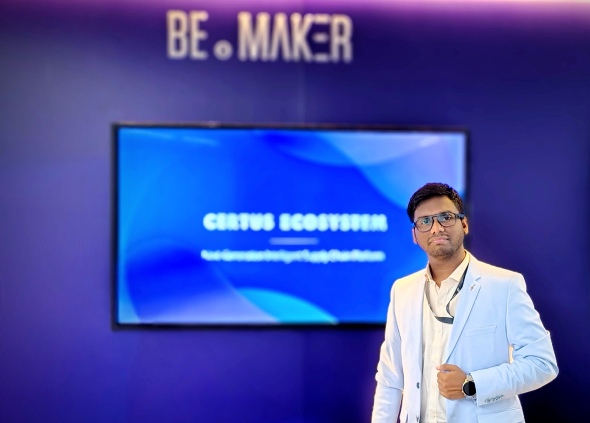

Applied AI & Risk Modelling
I connect machine learning, credit-risk analysis, and grounded GenAI to high-stakes commercial lending and enterprise workflows.
I connect machine learning, credit-risk analysis, and grounded GenAI to high-stakes commercial lending and enterprise workflows.
I turn time-series telemetry, syslogs, scanned pages, and charts into structured features, statistical signals, and inspectable RAG pipelines.
I carry solutions from problem discovery and architecture through FastAPI microservices, React/Spring Boot apps, and Kubernetes delivery.
Applied AI, data science, and backend systems across financial services, enterprise knowledge, telecom, and open banking.
From synthetic-identity verification and Assembly modernization to full-stack platforms and edge-ML research — seven builds that shaped how I engineer.
Top 20 finalist at ANZ Hackfest 2024 with a synthetic-identity verification concept using GANs and multimodal signal analysis.
Organization-wide hackathon winner for a GenAI-assisted workflow that translates and documents legacy Assembly routines for human review.
Led a capstone team building a telecom usage, rating, and billing platform with React, Spring Boot, MySQL, JUnit, Mockito, and Postman.
An open-source custom language and interpreter written in Java, paired with high-precision mathematical libraries.
Student web-application prototype connecting emergency medical access, oxygen and medicine workflows, and ML-based disease-risk support.
Undergraduate research exploring disease-outbreak prediction using edge-computing architectures, machine learning, and COVID-19 data.
Supervised machine-learning project in Python predicting mobile handset price tiers from hardware and connectivity attributes.
Especially for AI: a convincing demo is a start, not the finish line. Grounding, evaluation, failure handling, and the workflow around the model matter just as much.
Get close to the user, the decision they need to make, the systems already in place, and the constraints that shape a useful result.
Output · Problem frame & success signalConnect the product experience to data, models, APIs, and existing services. Make trade-offs and failure paths visible early.
Output · System map & chosen pathBring the interface and the underlying data/ML system together in an end-to-end flow that can be tried, inspected, and improved.
Output · Working flow & inspectable resultTest against representative examples, inspect misses and edge cases, and verify grounding before expanding scope.
Output · Evidence & iteration loopPackage with FastAPI, Docker, Kubernetes, and CI/CD pipelines so behavior stays observable and learns from real usage.
Output · Deployable service & feedback loopI’m Apratim Sarkar, a Digital Specialist Engineer and Data Scientist at Infosys based in Kolkata. I currently contribute to credit-risk and commercial-lending ML and GenAI solutions, following work across enterprise document intelligence, telecom network assurance, and open-banking APIs.
My craft spans statistical data science, applied AI/ML, and full-stack software engineering — from React and Spring Boot platforms to FastAPI microservices and RAG pipelines. Outside project delivery, I helped build Infy AI Tribes, TechniCALHub, and TechCohere to foster hands-on technical learning.
Move cursor across section for liquid photo trail · Click portrait to cycle

CAREER TIMELINE · INFOSYS
Contributing to ML and GenAI solutions for risk modelling and credit-risk analysis across next-generation commercial lending workflows.
Built AI/ML and multimodal GenAI innovations including enterprise document intelligence (GRAG, CRAG, self-query, OCR/vision).
Delivered telecom network assurance time-series ML and FastAPI microservices (ISNA) and AI-assisted open-banking API workflows (iBAP).
Led the training capstone team building a role-based telecom mediation and billing platform with React, Spring Boot, and MySQL.
Infosys Technology Awards
Tech Influencer · Dec 2024
Infosys INSTA & RISE Awards
Rookie of the Quarter & AI Tribes · Nov 2024
Hackathons & Foundations
GenAI Modernization Winner · ANZ Top 20 · ISI MTRP
“Apratim was a great peer to work with during our college years. He was the creative force behind many college events that wouldn't have reached their grandeur without him. He always comes with an out-of-the-box solution to complex problems. Also he has an artistic touch in the work he puts forward. He's extremely energetic when working in a team and helps others put forward their best efforts. I'm rooting for his bright future ahead!”
“Rarely do you come across someone as driven and versatile as Apratim. Having known him since college, I've witnessed his constant pursuit of knowledge and eagerness to help others. His dedication to music, his band, and its values was truly inspiring. Professionally, Apratim's rapid acquisition of skills in AI and ML is impressive, making him a valuable asset in this rapidly evolving field. A supportive friend and mentor, Apratim has always been there to guide and encourage me.”
“I have known Apratim for 4 years and can comfortably say that he is a total package. Starting from studies and coding, to organising cultural events as a team player, he is packed with vitality and creativity. Be it some out of the box thinking on a project, or performing as the lead vocalist of his band on a live stage, he sure knows how to pull some strings. Wishing him all the very best for his professional career ahead.”
“Bridges quantitative statistical baselines and grounded Generative AI so commercial lending underwriters get both calibrated risk scores and cited document evidence in one review flow.”
“Combined self-query, GRAG, CRAG, and OCR/vision pipelines with internally hosted open-source LLMs so enterprise teams could query tables, charts, and scanned pages without external data exposure.”
“Co-founded Infy AI Tribes, TechniCALHub, and TechCohere — leading hands-on architecture clinics and GenAI build sessions that earned the Infosys Technology Influencer & INSTA Awards.”
“Took SD-WAN utilization telemetry, SolarWinds OT streams, and Splunk syslogs from statistical time-series modeling all the way to containerized FastAPI microservices on Kubernetes with Argo CD.”
“Delivered 1st-place organization-wide hackathon winning tooling for Assembly-to-modern code modernization and a Top-20 ANZ Hackfest synthetic-identity verification pipeline.”